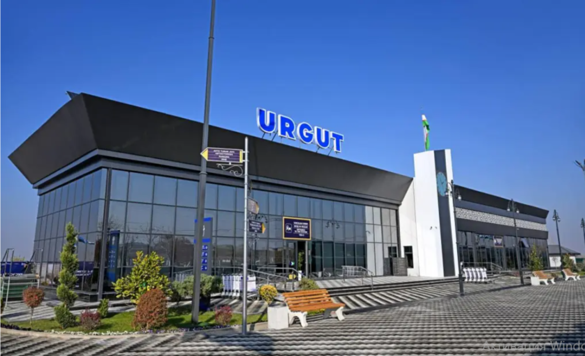
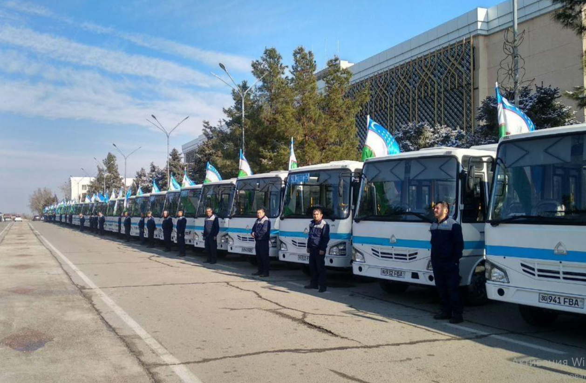

Urgut tumani
Urgut tumani- Bosh sahifa
- Xizmatlar
- Transport
Transport
Urgutga qanday kelish va tuman ichida qanday yurish mumkin.

Yo'nalish
Samarqand — Urgut yo'nalishi
Masofa taxminan 40 km, yo'l odatda 1 soat atrofida.
Batafsil
Tuman
Tuman ichida
Urgut shahridan qishloq va mahallalarga yo'nalishli avtobuslar va taksilar qatnaydi.
Batafsil| Nomi | Turi |
|---|---|
| Samarqand — Urgut yo'nalishi | Yo'nalish |
| Tuman ichida | Tuman |